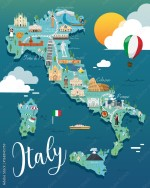

Recomendaciones para que emprendas tu viaje.
CONOCE BRASIL.
Brasil, tierra de exuberante naturaleza y vibrante cultura, encanta con sus playas icónicas, la selva amazónica y el ritmo del Carnaval de Río, ofreciendo una experiencia única y diversa en cada rincón
CONOCE ITALIA
Italia, en el corazón del Mediterráneo, combina historia, cultura y paisajes impresionantes, desde las ruinas de Roma hasta los canales de Venecia y las playas de Sicilia, ofreciendo una experiencia inolvidable llena de arte, gastronomía y belleza natural
CONOCE AUSTRALIA
Australia, con su impresionante Gran Barrera de Coral, vastos desiertos y vibrantes ciudades como Sídney y Melbourne, ofrece una aventura única llena de maravillas naturales y cultura diversa.